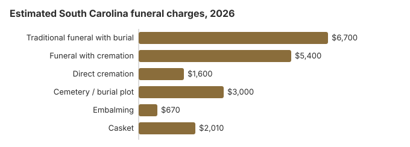

Funeral Costs in South Carolina: What Families Pay in 2026
Nothing about South Carolina funeral pricing is fixed. The same traditional service quoted at $6,700 from one South Carolina provider can run $5,025 or $8,710 at the next; that variation is the single most important thing to understand before you commit. This guide lays out typical South Carolina costs and where the gaps tend to show up.
South Carolina Funeral Prices by Item
These are our 2026 estimates for the main funeral charges in South Carolina. The state Board of Funeral Service licenses homes but leaves prices to each of them, so expect real quotes to land above or below these lines.
| Service | Average Cost | Range |
|---|---|---|
| Traditional funeral with burial | $6,700 | $5,025 – $8,710 |
| Funeral with cremation | $5,400 | $4,320 – $7,020 |
| Direct cremation | $1,600 | $1,120 – $2,240 |
| Cemetery / burial plot | $3,000 | $1,500 – $6,000 |
| Embalming | $670 | $500 – $1,500 |
| Casket | $2,010 | $670 – $5,360 |
How we got these numbers: each South Carolina figure in this table comes from our own cost model, not from a survey of South Carolina funeral homes, so treat it as a planning number rather than a quote or advice. The model is explained here, and our disclaimer covers its limits.
State sources: S.C. Code § 17-5-570; S.C. Code § 4-9-130.

Choosing Between Cremation and Burial in South Carolina
Cremation
- About $1,600 for a direct cremation
- About $5,400 when a service is added
- Nothing to pay a cemetery unless you want a niche or plot
- A memorial can be held later, anywhere
- Chosen for roughly 45% of South Carolina deaths
Traditional Burial
- About $6,700 for the funeral itself
- A plot adds roughly $3,000
- Most cemeteries will ask for a vault or liner
- Leaves a grave the family can visit
- Metal casket: about $2,500 national median (NFDA 2023 General Price List Study); what South Carolina sellers charge varies
Major Cities in South Carolina
Our estimates for the three largest South Carolina metro areas:
What Sets South Carolina Apart (South)
In parts of South Carolina, corporate consolidation has pushed pricing up; in other parts, family-owned funeral homes still anchor the market.
Where South Carolina Families Can Find Money for a Funeral
- In South Carolina the estate pays first for an unclaimed body, and the county can be charged only after that (S.C. Code § 17-5-570).
- Social Security pays $255 once, and only to a surviving spouse or child who qualifies; the claim is made at 1-800-772-1213 within two years.
- For a South Carolina veteran, the person who paid the funeral bill can claim VA money on Form 21P-530EZ: for a death on or after October 1, 2026 that was not service-related, up to $1,032 toward burial plus $1,032 toward a plot, as our veteran burial benefits guide explains.
- Medicaid, charity and other sources South Carolina families use are covered in our funeral payment assistance guide and how to pay for a funeral with no money.
Educational Resources
- Funeral Consumers AllianceIndependent nonprofit consumer advocacy for funeral rights
- FTC Funeral RuleThe federal rule protecting funeral consumers
- Funeral Insurance GuideCompare final expense and burial insurance options
- Best Burial Insurance CompaniesSide-by-side comparison of top burial insurance providers
- Payment Assistance GuideGovernment programs and financial help for funeral costs
- Insurance Plan ComparisonCompare coverage, premiums, and payout speed across providers
Compare Funeral Costs
- Average Funeral Cost in 2026National cost breakdown with real prices
- Cremation vs. Burial Cost ComparisonSide-by-side price comparison to help you decide
- Funeral Cost BreakdownEvery line item explained: know what you're paying for
- Cheapest Funeral OptionsLower-cost alternatives, with typical price ranges
- Direct Cremation: Most Affordable OptionNFDA 2023 median $2,645 with a family-supplied container (latest available)
- How to Compare Funeral PricesStep-by-step guide to getting the best price
Lower-Cost Choices, Ranked
| Choice | Our estimate | What it means |
|---|---|---|
| Direct cremation | $1,600 | The body is cremated without a viewing or ceremony, no sooner than 24 hours after death (S.C. Code § 32-8-340). |
| Direct burial | $3,350 | A prompt burial with no embalming or viewing; the plot and grave opening are billed by the cemetery on top. |
| Green burial | $3,685 | An unembalmed burial with no vault, in a South Carolina cemetery that allows it. |
| Cremation + memorial | $5,400 | A cremation first, then a gathering at a time and place the family picks |
| Traditional funeral | $6,700 | Viewing, funeral ceremony and graveside burial |
South Carolina Cremation and Burial in Detail
Two companion pages go further into each choice:
Cremation Costs in South Carolina
What South Carolina cremation costs, from about $1,600 for a direct cremation to $5,400 with a service, plus urns, where ashes may be scattered and memorial ideas.
Burial Costs in South Carolina
Each South Carolina burial charge, from a roughly $3,000 plot to the casket, vault, grave opening and headstone, adding up to $14,910 to $19,410 in all.
What Drives Funeral Costs in South Carolina
South Carolina writes price disclosure into S.C. Code §40-19-290. Before a casket is chosen, the funeral home must give full disclosure of its charges and name related expenses such as cemetery and florist costs. Each casket or other item of merchandise needs a price card or brochure, and the family receives a signed statement listing the service price, extras, cash advances and payment method. Statements about embalming must be truthful. Money paid for merchandise in advance is held in trust, and the Department of Consumer Affairs can investigate. With 45% of South Carolina deaths ending in cremation, compare those written statements for cremation packages too.
Fees South Carolina Families Often Miss
Watch for charges that were not in the first South Carolina quote.
- A line marking embalming as required: South Carolina law does not demand it.
Federal Rights on Top of State Law
First Steps for a South Carolina Funeral
Arranging a South Carolina funeral this week? Start here:
- First choose burial or cremation: cremation in South Carolina or burial in South Carolina.
Ordering South Carolina death certificates
South Carolina charges for the search, not the paper. The state Vital Records office collects a $12 search fee required by S.C. Code § 44-63-110; it is not refunded if no record turns up, and it includes one certified copy. Each extra copy of the same record ordered at the same time costs $3. Any request the office expects to fill within ten business days, which covers walk-in, drop-off and online orders, also carries a $5 expedite fee, so the first copy costs $17 that way. Mailed requests are not expedited and take about four weeks (S.C. Department of Public Health; S.C. Code Regs. 61-19, § 1300; checked October 29, 2026).
Online orders go through the two vendors the department approves, VitalChek and GoCertificates, which add a processing charge of about $8.70 to $8.75, and only an immediate family member may order that way. A South Carolina death record does not become public until 50 years after the death, so an executor or other legal representative should apply by mail or in person and say whom they represent.
- Count the accounts first: at $3, an extra copy on the first request costs far less than a second $12 search later.
- Drop-off requests are accepted only at the state office in Richland County.
- If the funeral home orders copies for you, compare its per-copy charge with the state fee.
Who licenses South Carolina funeral homes, and where to get help
The South Carolina Board of Funeral Service (803-896-4429) licenses the state's funeral homes. Call it if a home will not show you prices, adds charges you never approved or pushes you to sign on the spot.
South Carolina is not on the Funeral Consumers Alliance list of nine states that require a funeral director for parts of after-death care, so a family can buy only the services it actually wants. A cremation cannot take place until 24 hours after the death (S.C. Code § 32-8-340).
If the family has no money for the funeral
There is no state funeral payment. When a body goes unclaimed and the anatomical board declines it, the county coroner takes charge; the person's estate pays first, and only after that can the county be billed, while county councils may also fund an indigent burial or cremation as a public purpose (S.C. Code § 17-5-570; S.C. Code § 4-9-130). The $255 Social Security payment, which only a qualifying spouse or child can claim, covers little of the $6,700 average South Carolina funeral in our table.
Veterans
South Carolina has three national cemeteries: Beaufort (843-524-3925), the Florence National Cemetery Annex (843-669-8783) and Fort Jackson, on Percival Road in Columbia (803-699-2246). The funeral home books the grave through the VA's National Cemetery Scheduling Office at 800-535-1117. The state's M.J. Dolly Cooper Veterans Cemetery (864-332-8022) takes requests itself.
Five things to settle before signing in South Carolina
- Collect written price lists from two or more South Carolina funeral homes, and keep the signed statement that § 40-19-290 requires.
- Ask whether embalming is really needed for what you have planned; state law does not require it.
- If no one can pay, speak to the county coroner about indigent burial before a funeral home is hired.
- For a veteran, set a free grave at Fort Jackson against the price of a private plot.
- Keep the board's number, 803-896-4429, in case a home does not honor its price list.
Frequently Asked Questions
What does a South Carolina funeral cost in 2026?
On our estimates a traditional South Carolina funeral costs about $6,700, which is 19% under the $8,300 national median. A cremation with a service runs about $5,400 and a direct cremation about $1,600. Choosing burial adds roughly $3,000 in cemetery charges.
How much does cremation save over burial in South Carolina?
Yes, by a wide margin. A $1,600 direct cremation undercuts the $6,700 traditional South Carolina funeral by about $5,100, and by roughly $8,100 once a $3,000 plot is counted.
What protections does a South Carolina family have?
Under the FTC Funeral Rule (16 CFR 453), every South Carolina funeral home must give you an itemized General Price List, quote prices by phone, and accept a casket or urn you bought elsewhere without a handling fee. South Carolina does not make families use a funeral director for every step, per the Funeral Consumers Alliance. The Board of Funeral Service, at 803-896-4429, confirms licenses and takes complaints.
Where is the biggest saving on a South Carolina funeral?
Most of the saving comes from three choices: direct cremation or immediate burial, no embalming or viewing, and a memorial later at a church, park or home rather than in the funeral home chapel. Turn down any package that bundles items you don't want; a South Carolina funeral home has to let you buy individual goods and services from its price list.
Does South Carolina require embalming?
No. The Board of Funeral Service says South Carolina law does not require embalming, that funeral homes may not say otherwise, and that it is not needed for cremation, though a family may want it for a viewing. Under the Board's crematory regulations (S.C. Code Regs. ch. 57), a crematory that refrigerates bodies it will hold 24 hours or more must use a unit that keeps 40°F when full.
None of that requires embalming for a prompt funeral, so the roughly $670 our South Carolina estimate shows for it is optional; the State Board of Funeral Service (803-896-4429) is where to take a dispute over the charge.
Are South Carolina funerals cheaper than the national average?
Cheaper, on our numbers. The $6,700 South Carolina estimate sits below NFDA's 2023 national median of $8,300 for a funeral with viewing and burial; the matching cremation median is $6,280. Individual homes can be well above or below either figure.
What is the cheapest way to handle a death in South Carolina?
At roughly $1,600, direct cremation is the cheapest option in South Carolina. Direct burial is the next step up at about $3,350, which is $3,350 below a traditional South Carolina funeral.
How do I find a lower-priced South Carolina funeral home?
Call around and ask each South Carolina home for its General Price List, then compare the direct cremation and immediate burial lines. A casket or urn bought elsewhere must be accepted without a handling fee under the FTC Funeral Rule.